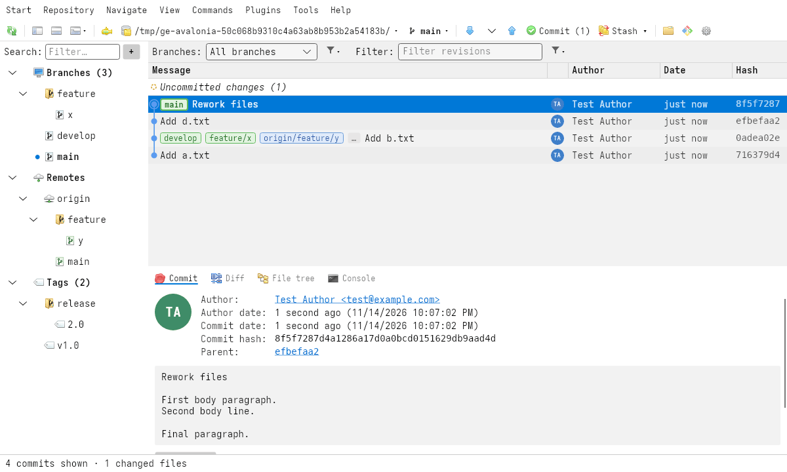
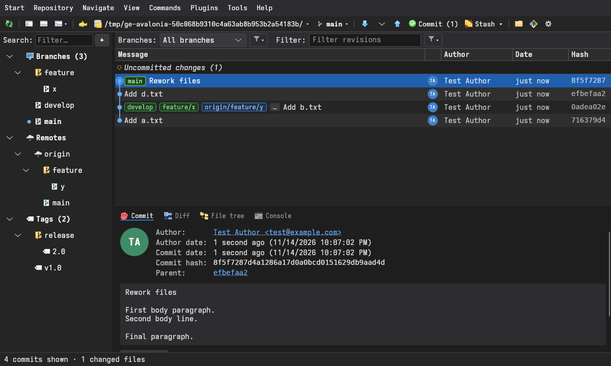
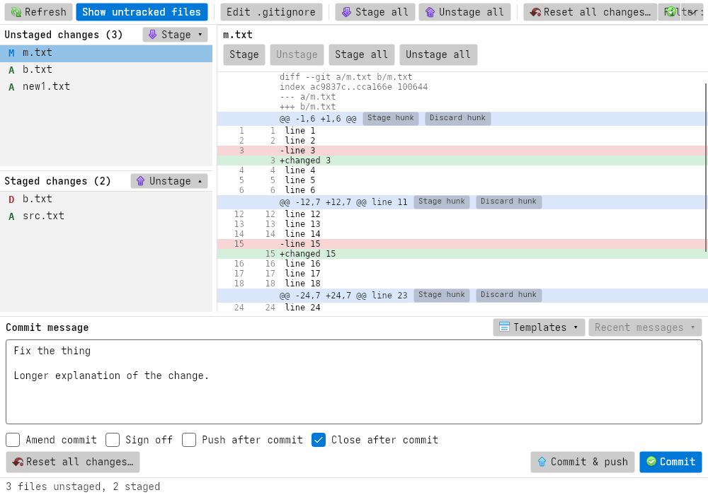
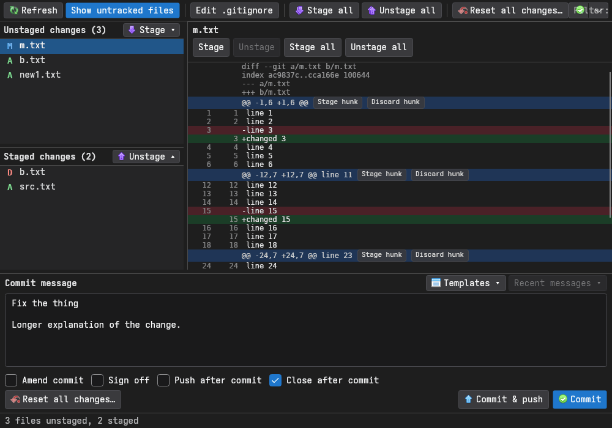
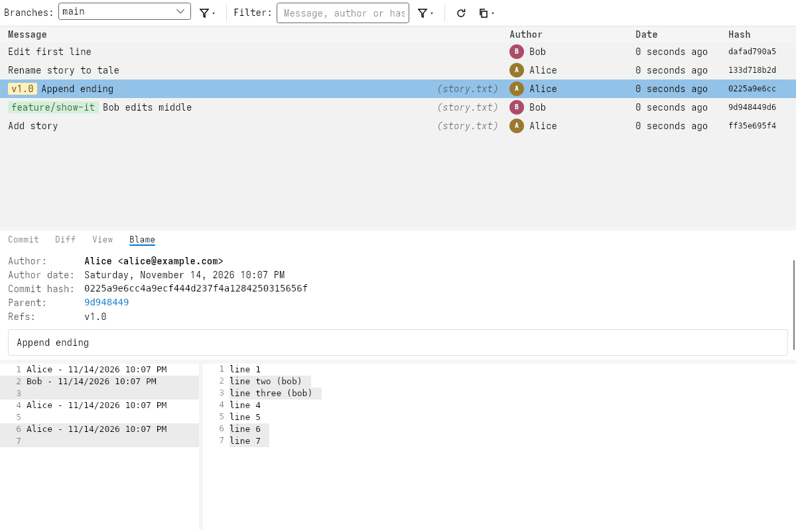
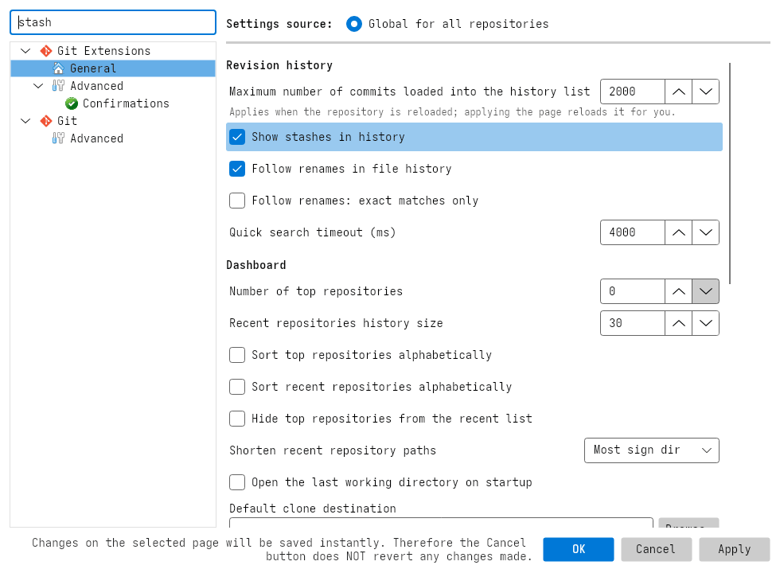
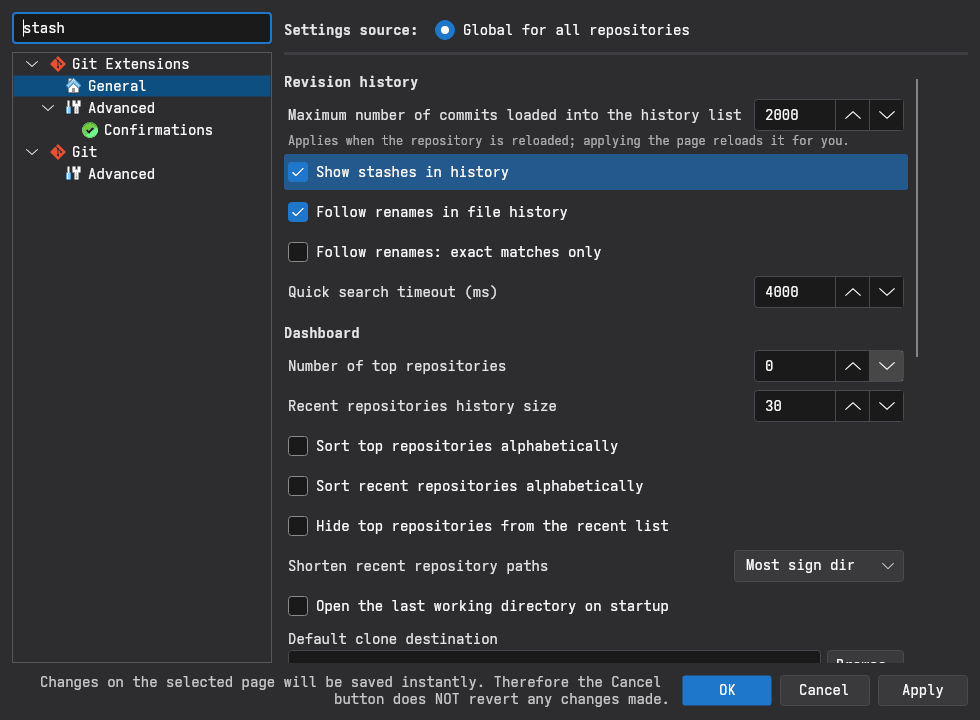
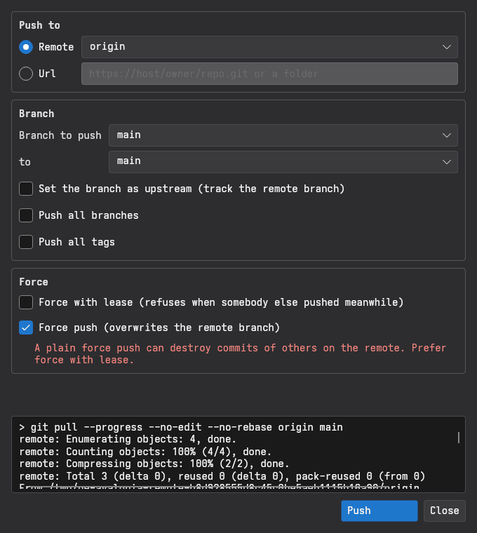

Ubuntu / Debian
amd64 and arm64 (.deb)
curl -LO https://github.com/khunder/git-extension-linux/releases/download/v0.1.0/git-extensions_0.1.0_amd64.deb sudo apt install ./git-extensions_0.1.0_amd64.deb
The graphical Git client you know, running natively on Linux.
Version 0.1.0. Packages are self-contained (no .NET runtime needed); git must be installed. Pick your distribution family, or see the release page for every file (RPM and Arch names may carry a distro suffix there). Latest release.
amd64 and arm64 (.deb)
curl -LO https://github.com/khunder/git-extension-linux/releases/download/v0.1.0/git-extensions_0.1.0_amd64.deb sudo apt install ./git-extensions_0.1.0_amd64.deb
x86_64 (.rpm)
curl -LO https://github.com/khunder/git-extension-linux/releases/download/v0.1.0/git-extensions-0.1.0-1.fedora.x86_64.rpm sudo dnf install ./git-extensions-0.1.0-1.fedora.x86_64.rpm
x86_64 (.rpm)
curl -LO https://github.com/khunder/git-extension-linux/releases/download/v0.1.0/git-extensions-0.1.0-1.opensuse.x86_64.rpm sudo zypper --no-gpg-checks install ./git-extensions-0.1.0-1.opensuse.x86_64.rpm
x86_64 (.pkg.tar.zst)
curl -LO https://github.com/khunder/git-extension-linux/releases/download/v0.1.0/git-extensions-0.1.0-1-x86_64.pkg.tar.zst sudo pacman -U ./git-extensions-0.1.0-1-x86_64.pkg.tar.zst
x86_64 and aarch64 (portable, no installation)
curl -LO https://github.com/khunder/git-extension-linux/releases/download/v0.1.0/git-extensions-0.1.0-x86_64.AppImage chmod +x git-extensions-0.1.0-x86_64.AppImage ./git-extensions-0.1.0-x86_64.AppImage
Tarball, x64 and arm64 (no root needed)
curl -LO https://github.com/khunder/git-extension-linux/releases/download/v0.1.0/git-extensions-linux-0.1.0-x64.tar.gz tar xzf git-extensions-linux-0.1.0-x64.tar.gz cd git-extensions && ./install.sh
Every release includes a SHA256SUMS file.
curl -LO https://github.com/khunder/git-extension-linux/releases/download/v0.1.0/SHA256SUMS sha256sum --check --ignore-missing SHA256SUMS
Run it with git-extensions [path/to/repository] or from your application menu.
Commit graph with ref labels, filtering and search.
File, hunk and line staging, amend, sign-off, templates.
Diff viewer, blame and file history with rename following.
Branches, tags, remotes and stashes in a sidebar tree.
Manage submodules and linked worktrees from dialogs.
Merge, rebase, cherry-pick, bisect, reset, clean and archive.
Format, apply and view patches.
Resolve merge conflicts without leaving the app.
Dedicated dialogs, with in-window credential prompts.
A settings dialog covering the common Git Extensions options.
Follows your system or set it manually.
The familiar Git Extensions icons and keyboard shortcuts.
Select an image to open it at full size.








This is a port of Git Extensions to Linux. What changed:
GitCommands, GitExtUtils and the plugin interfaces were separated from Windows-only code and kept.GIT_ASKPASS / SSH_ASKPASS helper lets Git ask for credentials in an in-window prompt.Not available yet: plugins, scripts, the hotkeys editor, build server integration and a few less common pages.
All credit for the original application goes to the Git Extensions team and contributors. This port reuses their GPL code and is licensed under the GNU GPL v3.0.